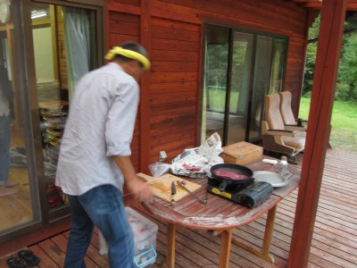
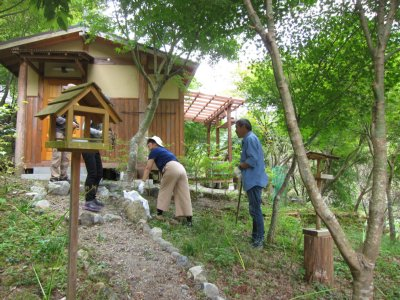
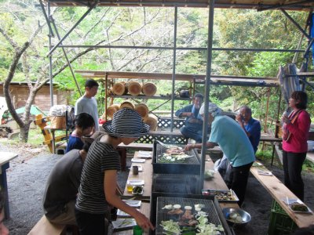

水窪で豆腐作ってみるって宴会お泊まり会 | 2013年10月 幹事：じゅんじゅん |
|---|---|
| さて、水窪に行き始めて結構な回数になりました。そのたびにじゅんじゅんや、水窪の人達に大変お世話になっています。有り難うございます。 今回もそんな感じです。メンバーは、じゅんじゅん、板橋さん、いづみさん、Kusaさん、波平さん、かむいさん、私と、夜の宴会+お泊まりでsugerの8名です。 一応、「自分たちで豆腐を作ってみよう」と企画はしてみましたが、はてさて。 | |
 佐久間ダム |  早速呑んじゃってますよ。この人 |
| お昼前に佐久間ダムへ向かい、展望台で260円（あれ、280円だったか？）弁当を頬張りつつ、雄大なダムに見とれてました。若干数名が金色の泡の出るジュースを頂いておりましたが。 ダムの展示館で勉強をし、教養を深めてから水窪に出発です。途中の「やまみち」で買い出しをします。豆腐の材料となる豆乳は既に購入済み。 | |
|  板橋さんが外で鹿肉たたきの準備 |  いっぱいやりながら豆乳の温度をみてます |
| さて、早めに今夜のお宿となる「田楽の里」に到着。一服して、風呂を入れ、夕食の準備を。今回も板橋さんから料理の差し入れで、鹿肉のたたき、煮込みシチュー、もしかして鶏肉とアボカド・トマト和えもそうかな。その他は、トマトと玉ねぎポン酢サラダ、大根と水菜と長芋じゃこサラダ、ウズラの卵肉巻き、じゃがいもチヂミです。あとお酒。 板橋さんの真っ赤な梅酒が美味しかった。後で赤紫蘇を入れるのがポイントらしい。今度やってみよう。 早くから飲み始めたけど、知らぬ間に午前様。1時半まで頑張ったけど、私はここで就寝。遅い人は2時半くらいまでお喋りしてたらしい。元気だね。 | |
 野菜もしっかり食べましょう |  ザルごし豆腐出来ました |
 さあ夕食ですよ |  今回も夕食たっぷり |
| 翌朝、起きるとsugerは出発後、朝食は既に板橋さんが準備してくれていました。 朝から美味しくご飯とパン、サラダ、コーヒーを頂き満足です。 さて本日は、いつもお世話になっている「わんわん塾」のお手伝い。なんですが、ゆっくりしてたらあっという間に9時半。なにしてんだか。 わんわん塾は過去の水窪レポにも書いてあるから読んでね。 今回は草刈りをすると言うことで、現地に着いたら終わってました・・・汗 不憫に思ったのか、板橋さんから彼岸花の球根を植える仕事を頂き、斜面にちょこちょこと植えていきます。その後、刈った草を燃やす仕事を請け負い、燃やす事への情熱をたぎらせました。 | |
|  わんわん塾にて彼岸花植栽中 |  取った草は燃やしましょう |
| それが終わると宴会の始まりです。バーベキューです。当然酒出ます。 しかし、しかーし、帰りの運転を考えると飲めません。飲みたいけど飲みません。肉がメチャ旨いです。飲みたいです。 まあ、しょがないよね。 でも、今回もメチャ楽しかった！ みんなで飲んでお喋りするの良いですよね。また行こう！ | |
 で、バーベキュー。肉美味い！ |  バーベキュー場も屋根が有るから安心 |
| 写真＆コメント ｂｙ べっしー | |